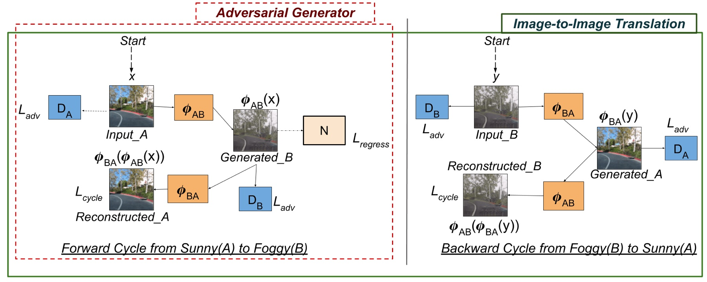
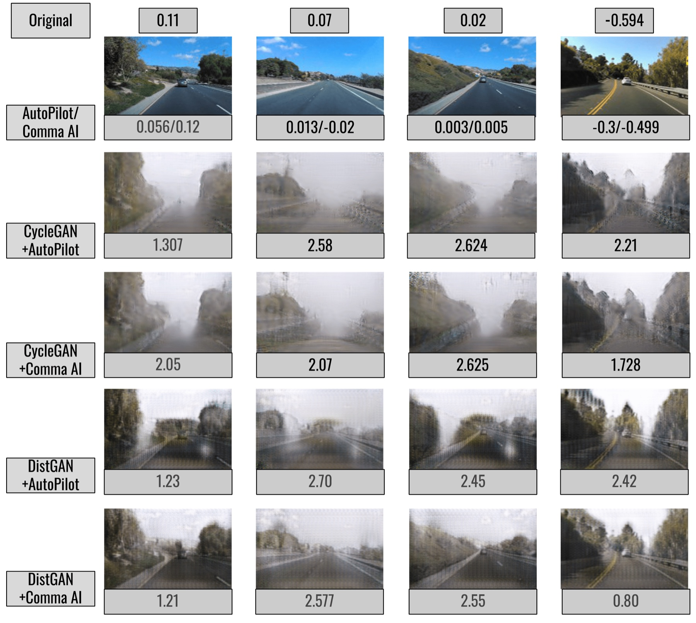

A Little Fog for a Large Turn
Adversarial examples usually look like static. We asked whether the weather could do the same job, and found that physically plausible fog is enough to send a steering model off the road.
Motivation
The standard threat model for adversarial robustness is an ℓp ball: perturbations small enough that no human would notice. It is mathematically clean and operationally irrelevant. Nobody airbrushes pixel noise onto a road sign at 60 km/h.
What does happen is weather. Fog, rain and glare are common, uncontrolled, and change the image a great deal more than any ℓp budget allows, while remaining entirely natural. If a navigation model breaks under realistic fog, that is a safety finding, not a curiosity.
So we redefined the perturbation budget in perceptual terms instead of pixel terms: the attacked image must remain a believable photograph of the same scene, not merely a nearby point in pixel space.
Method
We learn the clear → foggy mapping with unpaired image translation, then search inside the generator for the fog that most damages a downstream steering model.

Clear-weather frames transformed into physically plausible fog.
- CycleGAN. Learns a clear↔foggy mapping from unpaired data while preserving the structure of the scene, so the road geometry the steering model needs is still there.
- DistanceGAN. An alternative one-sided mapping that preserves pairwise distances, used as a check that the findings are not an artefact of one generator.
- Adversarial search. Rather than perturbing pixels, we optimise in the generator's latent space for the fog that maximises steering error: every candidate is a realistic image by construction.
Results

Left: generated fog. Right: the resulting shift in predicted steering angle.
- Large turns from a little fog. Fog well within the range a human driver would call "light" produces steering-angle errors big enough to leave the lane.
- Not just degradation. Randomly sampled fog of the same density does far less damage than the adversarially searched fog, so the effect is a targeted failure, not a general loss of image quality.
- Consistent across generators. Both CycleGAN and DistanceGAN pipelines reproduce the effect, on multiple steering models.
Why it matters
This was, to our knowledge, the first work to use generative weather as an adversarial attack on autonomous navigation. It reframes robustness testing for driving: the interesting question is not whether a model survives imperceptible noise, but whether it survives a bad afternoon.
The same machinery doubles as a data generator: synthetic adverse-weather sets for training and for regression-testing a stack before it meets real fog.